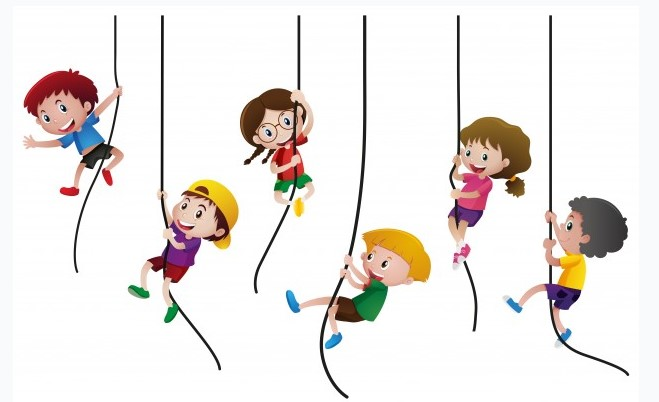

Un Mundo Pensado para Niños
Aprende Jugando y Cantando

Edad de 4 y 5 Años
Actividades

- Palabras encadenadas: Con este otro juego de palabras, el niño o niña podrá ampliar su vocabulario a la vez que
El tradicional juego de las palabras encadenadas se basa en decir una palabra, que el niño o niña pueda comprender, y encadenar con otra que comienza por la última sílaba de la palabra que se ha dicho, es decir; si decimos “farola”, la siguiente palabra encadenada que podemos decir es “lago”, y así sucesivamente.
Si le ponemos un poco más de dificultad al juego como establecer un tiempo máximo de respuesta para decir la siguiente palabra encadenada, el niño o niña podrá desarrollar su velocidad de reacción.
El objetivo de estos todos estos juegos es que hagan uso y desarrollen su capacidad creativa, su expresión corporal y perfeccionen su lenguaje, y este aprendizaje debe ser estimulado de una forma que les sea motivadora.
- Pintura con cepillo de dientes: Otra forma de fomentar la creatividad del niño con las pinturas es empleando un cepillo de dientes, que utilizará como si fuera un pulverizador.
Para ello emplearemos los mismos materiales que mencionamos en el anterior juego más un par de cepillos de dientes, para usar más de un color, o brochas pequeñas. En esta actividad necesitaréis tener plantillas de cartón hechas de las cosas que queráis como una hoja, una mariposa, una manzana… para que se haga la forma deseada en la cartulina base una vez que esparzan la pintura con el cepillo.
Para comenzar, echa un poco de agua en las témperas para que la pintura no quede muy densa en el cepillo. Después, anima al niño o niña a que moje el cepillo en la tempera. Luego, enséñale a coger con una mano el cepillo boca abajo, y con la otra mano pasar sus dedos por las cerdas para que salpique la pintura y se forme el dibujo.
Puede realizar esta acción tantas veces quiera, y una vez finalizado, apartar la plantilla con cuidado de la cartulina base para que no se diluya el dibujo.
- El juego del mago: con este juego el niño o niña podrá ser capaz de comunicarse y expresarse con sus movimientos corporales, trabajando así su capacidad de expresión corporal. Los juegos lúdicos se consideran los más apropiados para desarrollar este tipo de capacidades que, además de divertirse, se procura que el niño o niña acepte su propio cuerpo y que haga uso de la improvisación.
Lo primero se necesita una pelota que simula una bola de cristal mágica. El mago (adulto en este caso) llevará la “bola de cristal” mientras que los niños y niñas se situarán detrás de una línea imaginaria. El mago convertirá con sus poderes y su bola de cristal a los niños en los animales que él decida y ellos tendrán que salir de la línea imaginaria imitando al animal.
Cuando el mago quiera dará una señal e intentará atrapar a los niños que no han conseguido traspasar la línea imaginaria. Los pequeños que haya capturado el mago se convertirán en magos.
Este juego también ayuda a desarrollar la imaginación del niño, ya que tiene que ponerse en la piel del animal que le haya tocado imitar y le ayudará a liberar tensiones.